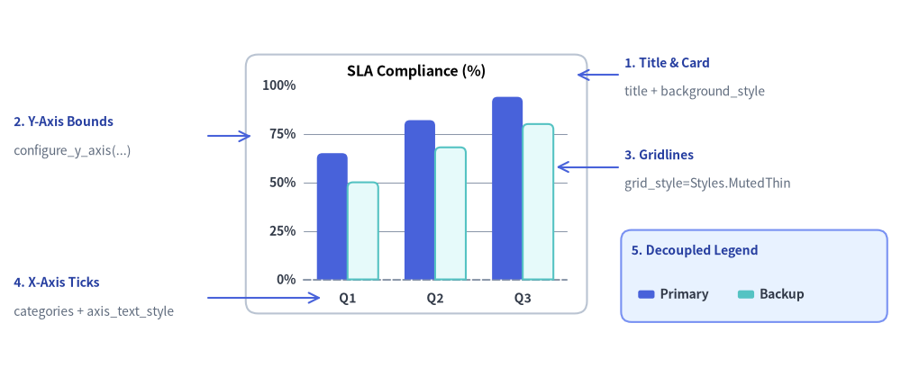
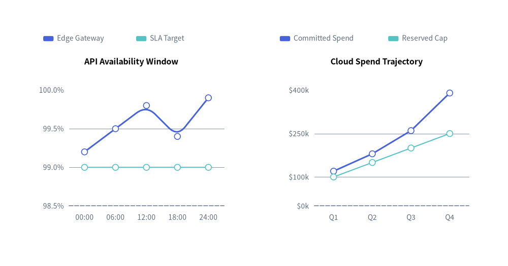
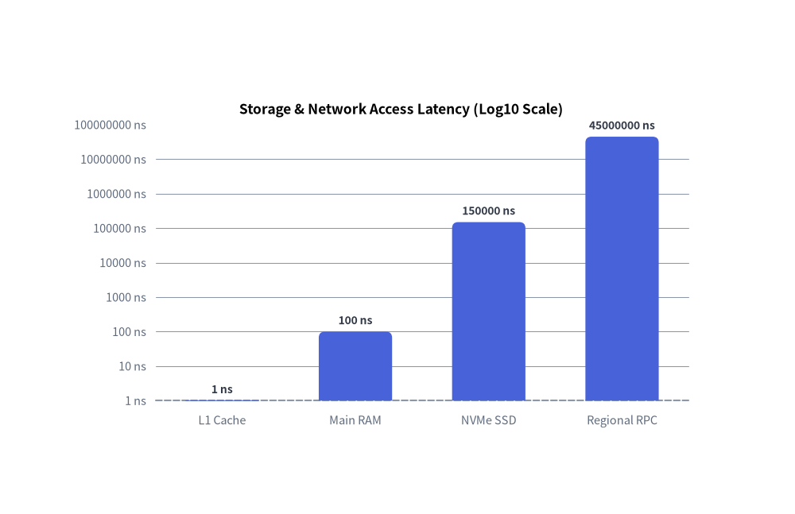
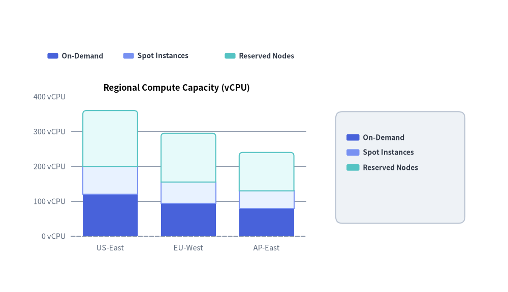

Axes, Scales & Legends
All Cartesian charts (BarChart, LineChart, AreaChart, ScatterChart) and multi-series/slice charts (PieChart, RadarChart) share a unified foundation for coordinate axis scaling, tick and unit formatting, decoupled legend placement, and bounding-box measurement.
Every visual axis element follows Drawlib's presence-based styling model, giving you independent control over domain bounds, gridlines, tick formatters, and legend coordinates.

Source Code
from drawlib.canvas import save, setup
from drawlib.charts.bar import BarChart
from drawlib.lines import line
from drawlib.shapes import rectangle
from drawlib.styles import Colors, Styles
from drawlib.text import text
setup(width=132, height=54)
chart = BarChart(
categories=["Q1", "Q2", "Q3"],
axis_line_style=Styles.MutedDashed,
axis_text_style=Styles.DarkBold.patch(text_size=10.0),
grid_style=Styles.MutedThin,
background_style=Styles.Neutral.patch(shape_r=1.8, shape_fill_color=Colors.White, shape_line_color=Colors.Gray4),
width=50.0,
height=38.0,
title="SLA Compliance (%)",
title_style=Styles.BlackBold.patch(text_size=11.5),
bar_mode="group",
bar_r=0.8,
)
chart.add_series("Primary", [65.0, 82.0, 94.0], style=Styles.PrimaryFlat)
chart.add_series("Backup", [50.0, 68.0, 80.0], style=Styles.SecondaryNeutral)
chart.configure_y_axis(min_value=0, max_value=100, tick_step=25, format="{:.0f}%")
chart.draw(xy=(36.0, 8.0))
callout_title = Styles.DarkBold.patch(text_size=10.0, halign="left", text_color=Colors.Primary5)
callout_sub = Styles.Muted.patch(text_size=10.0, halign="left")
arrow_style = Styles.Primary.patch(shape_line_width=1.2)
# 1. Title & Background Card (Top-Right Callout)
line((90.5, 43.0), (84.5, 43.0), arrow_head="->", style=arrow_style)
text((91.5, 44.8), "1. Title & Card", style=callout_title)
text((91.5, 40.5), "title + background_style", style=callout_sub)
# 2. Y-Axis Bounds & Format (Top-Left Callout)
line((30.5, 34.0), (36.8, 34.0), arrow_head="->", style=arrow_style)
text((2.0, 36.2), "2. Y-Axis Bounds", style=callout_title)
text((2.0, 31.8), "configure_y_axis(...)", style=callout_sub)
# 3. Horizontal Gridlines (Middle-Right Callout)
line((90.5, 29.5), (81.5, 29.5), arrow_head="->", style=arrow_style)
text((91.5, 31.3), "3. Gridlines", style=callout_title)
text((91.5, 27.0), "grid_style=Styles.MutedThin", style=callout_sub)
# 4. X-Axis Category Ticks (Bottom-Left Callout)
line((30.5, 10.3), (47.0, 10.3), arrow_head="->", style=arrow_style)
text((2.0, 12.6), "4. X-Axis Ticks", style=callout_title)
text((2.0, 8.2), "categories + axis_text_style", style=callout_sub)
# 5. Decoupled Legend (Bottom-Right Box & Callout)
rectangle((110.5, 13.5), width=39.0, height=13.5, style=Styles.PrimaryNeutral.patch(shape_r=1.5))
text((92.5, 17.2), "5. Decoupled Legend", style=callout_title)
chart.draw_legend(
xy=(93.5, 10.8),
text_style=Styles.DarkBold.patch(text_size=10.0),
orientation="horizontal",
swatch_width=2.4,
swatch_height=1.2,
item_gap=3.0,
)
save()
1. Custom Axis Bounds, Tick Steps & Value Formatting
Cartesian charts expose chart.configure_x_axis(...) and chart.configure_y_axis(...) (backed by the Axis model) to customize domain bounds (min_value, max_value), explicit ticks (ticks or tick_step), format strings or callables (format), unit suffixes (unit), and axis titles (label).
from drawlib.canvas import save, setup
from drawlib.charts.line import LineChart
from drawlib.styles import Styles
setup(width=118, height=62)
# Left Chart: Explicit tick_step, format string, and unit suffix
sla_chart = LineChart(
axis_line_style=Styles.MutedDashed,
categories=["00:00", "06:00", "12:00", "18:00", "24:00"],
axis_text_style=Styles.Muted.patch(text_size=10.0),
grid_style=Styles.MutedThin,
width=49.0,
height=42.0,
title="API Availability Window",
title_style=Styles.BlackBold.patch(text_size=11.5),
smooth=True,
show_points=True,
)
sla_chart.add_series("Edge Gateway", [99.2, 99.5, 99.8, 99.4, 99.9], style=Styles.PrimaryFlat, line_width=2.2)
sla_chart.add_series("SLA Target", [99.0, 99.0, 99.0, 99.0, 99.0], style=Styles.SecondaryNeutral, line_style="dashed")
sla_chart.configure_y_axis(
min_value=98.5,
max_value=100.0,
tick_step=0.5,
format="{:.1f}%",
label="Uptime (%)",
)
sla_chart.draw(xy=(6.0, 8.0))
sla_chart.draw_legend(xy=(10.0, 53.0), text_style=Styles.Muted.patch(text_size=10.0), orientation="horizontal")
# Right Chart: Custom callable formatter and explicit ticks list
cost_chart = LineChart(
axis_line_style=Styles.MutedDashed,
categories=["Q1", "Q2", "Q3", "Q4"],
axis_text_style=Styles.Muted.patch(text_size=10.0),
grid_style=Styles.MutedThin,
width=49.0,
height=42.0,
title="Cloud Spend Trajectory",
title_style=Styles.BlackBold.patch(text_size=11.5),
show_points=True,
)
cost_chart.add_series("Committed Spend", [120, 180, 260, 390], style=Styles.PrimaryFlat, line_width=2.2)
cost_chart.add_series("Reserved Cap", [100, 150, 200, 250], style=Styles.SecondaryNeutral, line_style="dotted")
cost_chart.configure_y_axis(
ticks=[0, 100, 250, 400],
format=lambda v: f"${v:,.0f}k",
label="Quarterly Cost (USD)",
)
cost_chart.draw(xy=(63.0, 8.0))
cost_chart.draw_legend(xy=(65.0, 53.0), text_style=Styles.Muted.patch(text_size=10.0), orientation="horizontal")
save()

2. Linear ("Nice Numbers") vs. Logarithmic (scale="log") Scaling
Each Axis supports two scaling engines via scale:
scale="linear"(default): Uses the Nice Numbers algorithm to automatically select human-readable step intervals ($1, 2, 5 \times 10^k$) across the data range whentick_stepandticksare omitted.scale="log": Maps positive values onto a base-10 logarithmic axis ($\log_{10}$). Bounds automatically snap to powers of 10 ($10^0, 10^1, 10^2, \dots$), and intermediate ticks ($1, 2, 5 \times 10^k$) are generated automatically when the span covers $\le 2$ orders of magnitude.
from drawlib.canvas import save, setup
from drawlib.charts.bar import BarChart
from drawlib.styles import Styles
setup(width=105, height=68)
chart = BarChart(
axis_line_style=Styles.MutedDashed,
categories=["L1 Cache", "Main RAM", "NVMe SSD", "Regional RPC"],
axis_text_style=Styles.Muted.patch(text_size=10.5),
grid_style=Styles.MutedThin,
value_text_style=Styles.DarkBold.patch(text_size=10.0),
value_format="{:g} ns",
width=82.0,
height=46.0,
title="Storage & Network Access Latency (Log10 Scale)",
title_style=Styles.BlackBold.patch(text_size=12.5),
bar_width_ratio=0.55,
bar_r=0.8,
)
chart.add_series("Median Read Latency", [1.0, 100.0, 150000.0, 45000000.0], style=Styles.PrimaryFlat)
chart.configure_y_axis(
scale="log",
unit="ns",
label="Access Time in Nanoseconds (log10)",
)
chart.draw(xy=(12.0, 10.0))
save()

3. Decoupled Legends (draw_legend) & Bounding Sizing (get_size)
Instead of hardcoding legends inside a rigid chart box, Drawlib decouples legend rendering via chart.draw_legend(...). You can place horizontal or vertical legends anywhere on the canvas, customize swatch_width, swatch_height, and item_gap, and query chart.get_size() -> (width, height) to align legends or surrounding cards relative to the chart's dimensions.
from drawlib.canvas import save, setup
from drawlib.charts.bar import BarChart
from drawlib.shapes import rectangle
from drawlib.styles import Styles
setup(width=118, height=68)
chart = BarChart(
categories=["US-East", "EU-West", "AP-East"],
axis_line_style=Styles.MutedDashed,
axis_text_style=Styles.Muted.patch(text_size=10.5),
grid_style=Styles.MutedThin,
width=66.0,
height=42.0,
title="Regional Compute Capacity (vCPU)",
title_style=Styles.BlackBold.patch(text_size=12.0),
bar_mode="stack",
bar_r=0.8,
)
chart.add_series("On-Demand", [120, 95, 80], style=Styles.PrimaryFlat)
chart.add_series("Spot Instances", [80, 60, 50], style=Styles.PrimaryNeutral)
chart.add_series("Reserved Nodes", [160, 140, 110], style=Styles.SecondaryNeutral)
chart.configure_y_axis(unit="vCPU")
chart_x, chart_y = 8.0, 8.0
chart.draw(xy=(chart_x, chart_y))
# 1. Horizontal Legend placed above the chart plot area
chart.draw_legend(
xy=(11.0, 55.0),
orientation="horizontal",
item_gap=3.5,
swatch_width=2.5,
swatch_height=1.3,
text_style=Styles.DarkBold.patch(text_size=10.0),
)
# 2. Vertical Legend inside a Sidebar Card aligned via chart.get_size()
chart_w, chart_h = chart.get_size()
legend_card_cx = chart_x + chart_w + 19.0
rectangle(
xy=(legend_card_cx, chart_y + chart_h / 2.0),
width=30.0,
height=26.0,
style=Styles.Neutral.patch(shape_r=1.5),
)
chart.draw_legend(
xy=(legend_card_cx - 12.5, chart_y + chart_h / 2.0 + 7.0),
text_style=Styles.DarkBold.patch(text_size=10.0),
orientation="vertical",
swatch_width=3.0,
swatch_height=1.5,
)
save()

4. API Reference
Axis Configuration (configure_x_axis / configure_y_axis & Axis)
Available on BarChart, LineChart, AreaChart, and ScatterChart (returns the underlying Axis instance):
chart.configure_x_axis(
scale: Literal["linear", "log"] | None = None,
min_value: float | None = None,
max_value: float | None = None,
ticks: list[float] | None = None,
tick_step: float | None = None,
format: str | Callable[[float], str] | None = None,
unit: str | None = None,
label: str | None = None,
show_grid: bool | None = None,
grid_style: Style | None = None,
show_axis_line: bool | None = None,
line_style: Style | None = None,
show_ticks: bool | None = None,
tick_label_style: Style | None = None,
) -> Axis
(Identical parameters are accepted by chart.configure_y_axis(...). The underlying Axis(...) constructor and axis.configure(...) method also accept label_style: Style | None = None).
| Parameter | Type | Default | Description |
|---|---|---|---|
scale |
"linear" | "log" |
"linear" |
Coordinate scaling mode (linear Nice Numbers or base-10 logarithmic). |
min_value / max_value |
float | None |
None |
Explicit minimum/maximum axis bounds. If None, derived from series data. |
ticks |
list[float] | None |
None |
Explicit list of tick values (overrides automatic tick generation). |
tick_step |
float | None |
None |
Explicit step interval between linear ticks. |
format |
str | Callable[[float], str] | None |
None |
Python format string (e.g. "{:.1f}%", "${:,.0f}") or callable fn(val) -> str. |
unit |
str |
"" |
Unit suffix appended to formatted tick labels if not already present (e.g. "ms", "Gbps"). |
label |
str |
"" |
Axis title label rendered along the axis. |
show_grid |
bool |
True |
Whether to draw gridlines for this axis when grid_style is present. |
grid_style |
Style | None |
None |
Per-axis gridline style override. |
show_axis_line |
bool |
True |
Whether to draw the axis baseline stroke. |
line_style |
Style | None |
None |
Per-axis baseline stroke style override. |
show_ticks |
bool |
True |
Whether to draw tick labels along this axis. |
tick_label_style |
Style | None |
None |
Per-axis tick label text style override. |
label_style |
Style | None |
None |
Optional Style override on Axis for the axis title (label) typography (axis.configure(label_style=...) or chart.y_axis.label_style = ...). |
Direct Axis Property Access & Axis.format_value(val)
In addition to configure_x_axis() and configure_y_axis(), you can inspect or mutate the underlying Axis objects directly via properties:
chart.x_axis -> Axisandchart.y_axis -> Axis: Direct access to the horizontal and verticalAxisinstances onBarChart,LineChart,AreaChart, andScatterChart.bar_chart.value_axis -> Axis: Orientation-aware property onBarChartthat returnsy_axiswhenorientation == "vertical"andx_axiswhenorientation == "horizontal".bar_chart.category_axis -> Axis: Orientation-aware property onBarChartthat returnsx_axiswhenorientation == "vertical"andy_axiswhenorientation == "horizontal".axis.format_value(value: float) -> str: Formats any numeric value into a display string using the axis's configuredformatstring/callable andunitsuffix (automatically rounding near-integers whenformat=None).
# Orientation-independent configuration on BarChart + custom label_style and format_value()
chart.value_axis.configure(min_value=0, max_value=100, unit="%", label="Utilization", label_style=Styles.DarkBold)
formatted = chart.value_axis.format_value(85.0) # -> "85 %"
Radial Axis Configuration (
RadarChart):RadarChartprovideschart.configure_axis(*, min_value=None, max_value=None, levels=None, scale_format=None) -> RadarChartto configure concentric spoke rings.
Decoupled Legend Rendering (draw_legend)
Available on BarChart, LineChart, AreaChart, PieChart, RadarChart, and ScatterChart:
chart.draw_legend(
xy: tuple[float, float],
text_style: Style,
orientation: Literal["vertical", "horizontal"] = "vertical",
swatch_width: float = 2.4,
swatch_height: float = 1.2,
item_gap: float = 4.0,
*,
scale: float = 1.0,
) -> None
- Coordinate Anchor
xy: Fororientation="vertical",xyis the top-left starting point (items step downward). Fororientation="horizontal",xyis the middle-left starting point (items flow rightward separated byitem_gap). - Per-Item Styling & Visibility: Each
add_series(...)oradd_slice(...)call acceptslegend_text_style: Style | None = Noneandshow: bool = True. If an element hasshow=False, its legend entry is automatically hidden while preserving horizontal layout spacing.
Layout Sizing (get_size)
Available on all 7 chart classes (BarChart, LineChart, AreaChart, PieChart, RadarChart, ScatterChart, GanttChart):
width, height = chart.get_size()
Returns the unscaled (width, height) bounding box dimensions of the chart in canvas units.